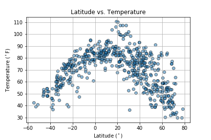
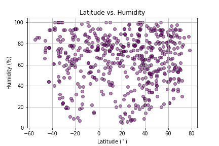

Charts
Temperature
Windspeed
Humidity
Cloudiness
Comparison
Dataset
Data
(current)
Comparison
Summary: Latitude vs X
 Latitude is a measure of the distance you are located from the equator. Commonly shown as an imaginary horizontal line that goes across the earth on maps - it is used along with longitude as a reference point to determine location. The tilt of the earth affects the seasons we experience throughout the year and latitude is a key factor determining the climate at a particular location. This is primarily due the amount of solar heating received from the sun; however, locations with the same latitude may have significantly different climates due to local topographical features such as mountains or being along or near the coast. This study examines a random sample of over 600 cities between -60 and 80 degree latitude and seeks to analyze the relationship between latitude and temperature, cloudiness, humidity, and windspeed. Lower latitudes (i.e. those closer to equator) receive more direct sunlight than higher latitude locations (i.e those near the poles). Energy input from the sun is the main driving force in the atmosphere.
Visualizations
